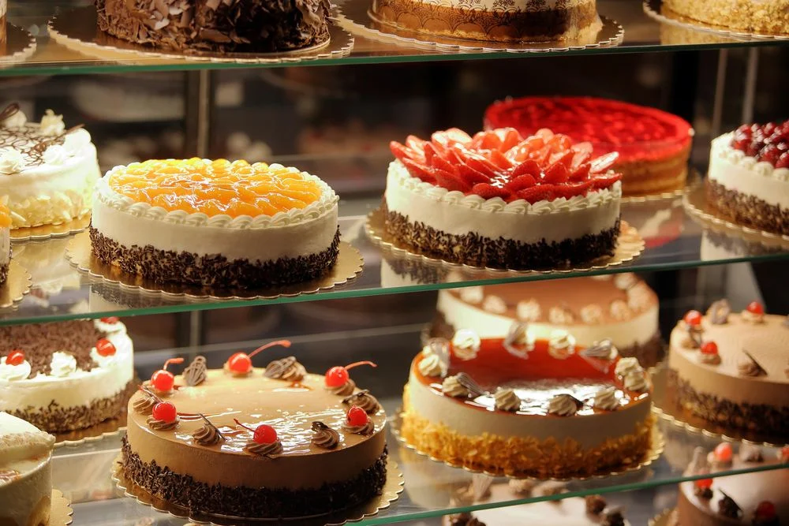
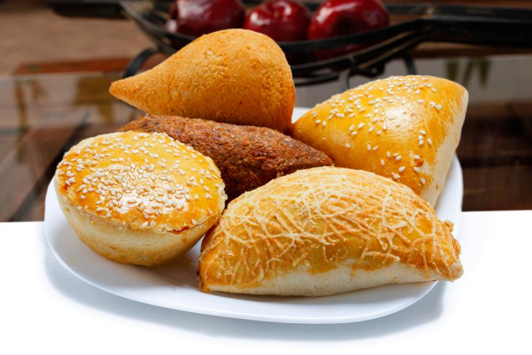

Conheça Nossas Delícias

Bolos Maravilhosos
Massa fofinha e recheios generosos para sua festa ou café.
Ver Cardápio

Salgados Quentinhos
Feitos na hora para acompanhar os seus melhores momentos.
Ver SalgadosO lugar onde o sabor de verdade encontra o aconchego de um abraço.
Nossas receitas são feitas à mão, com 100% de afeto e ingredientes selecionados.
Nós acreditamos que a comida tem o poder de criar memórias e aproximar pessoas. Por isso, cada um dos nossos bolos, doces e salgados é feito de forma 100% artesanal, combinando ingredientes selecionados com muito carinho e dedicação. Da massa fofinha do bolo que lembra a infância ao salgado quentinho feito na hora, cada receita é preparada com um toque único de afeto.
Nossa missão não é apenas adoçar o seu dia ou saciar a sua fome, mas sim transformar momentos simples em celebrações inesquecíveis. Seja para acompanhar o café da tarde, presentear alguém especial ou fazer parte da sua festa, estamos aqui para levar mais sabor e amor até você.

Massa fofinha e recheios generosos para sua festa ou café.
Ver Cardápio
Feitos na hora para acompanhar os seus melhores momentos.
Ver Salgados